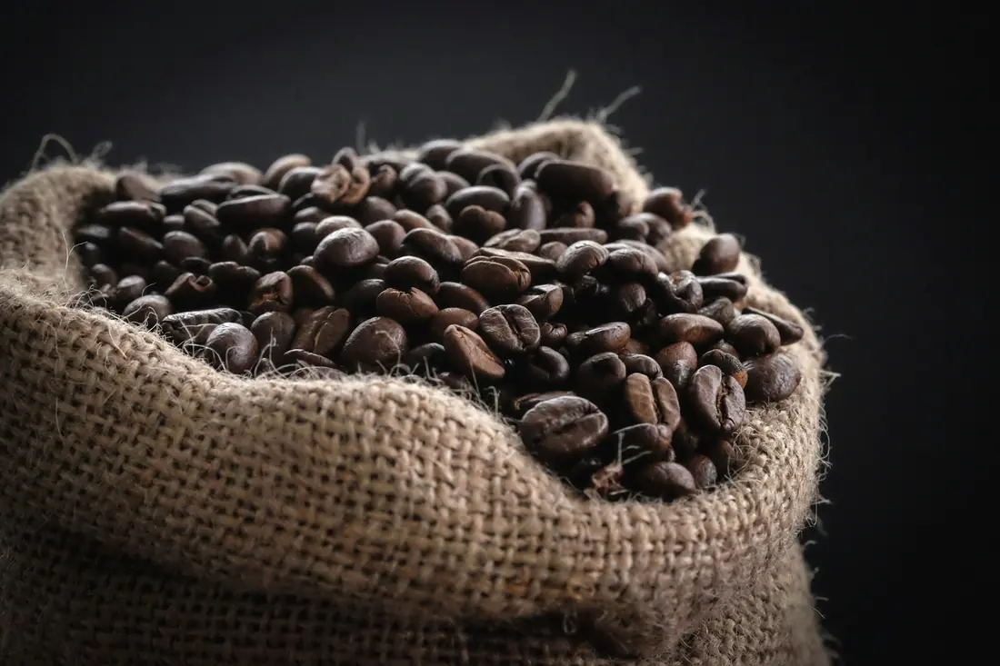
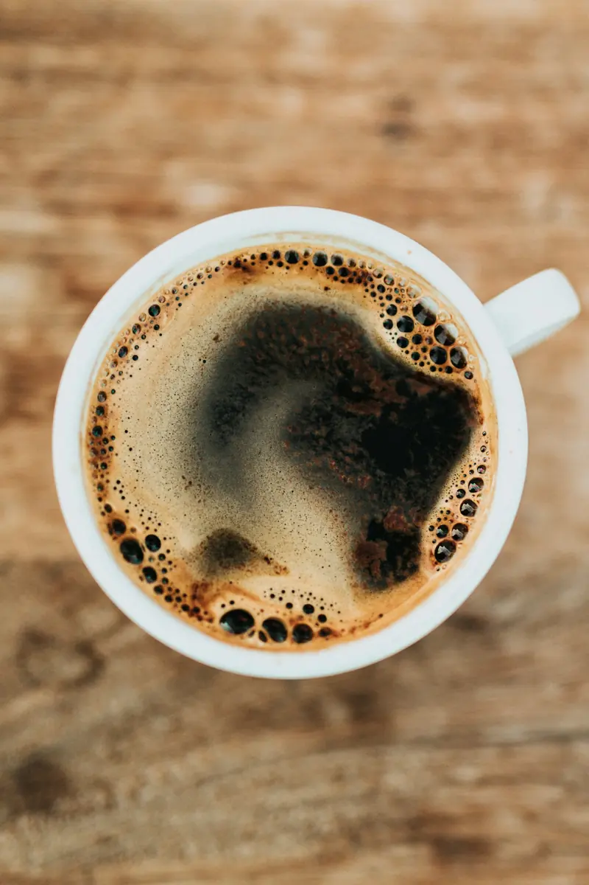
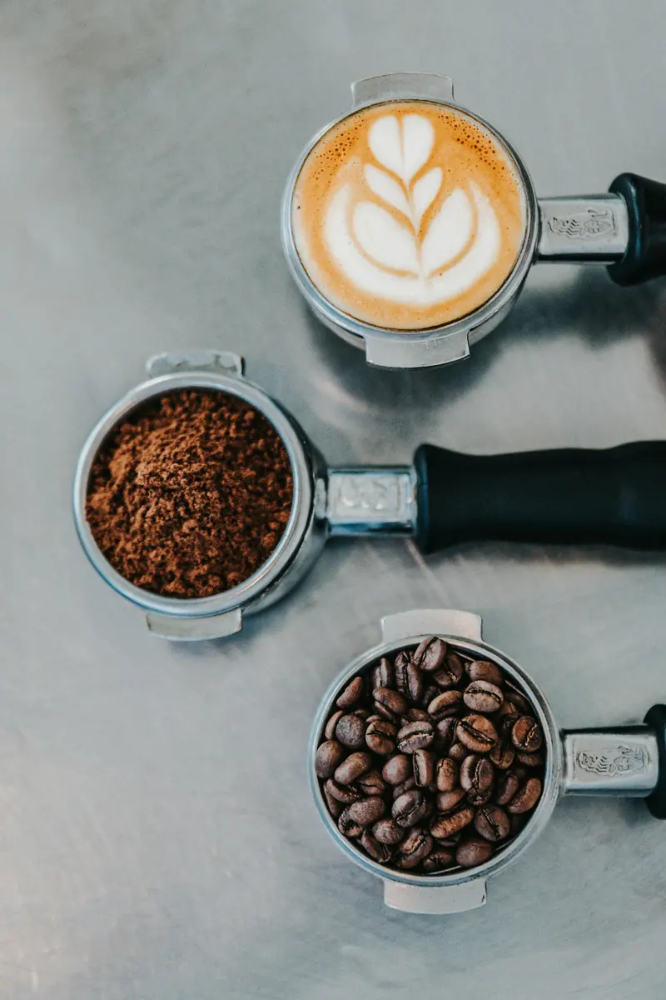
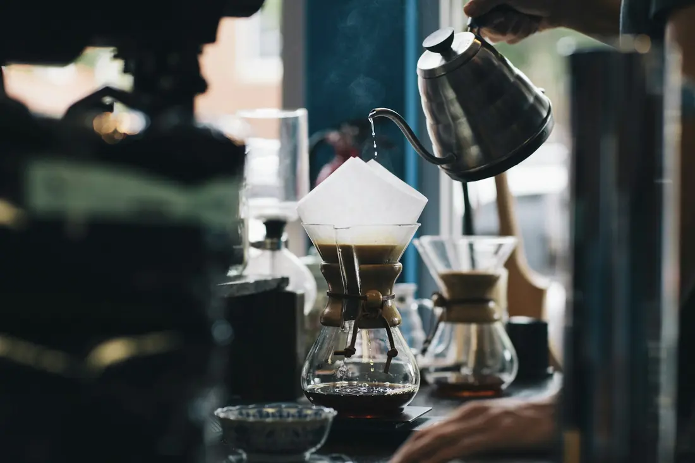
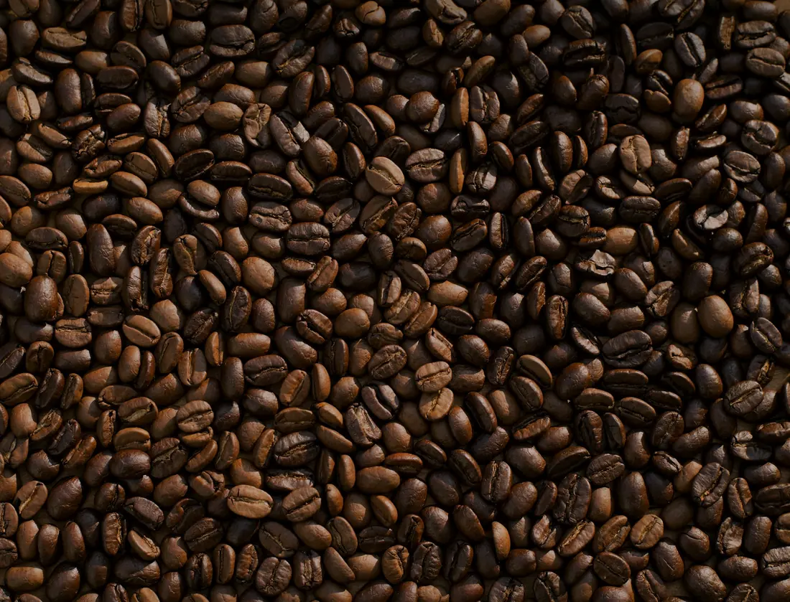

Café especial · Serra da Mantiqueira, MG
Torrado na segunda. Na sua porta até sexta.
Café de 1.120 metros de altitude, colhido à mão e torrado na semana do seu pedido. Você escolhe o perfil de sabor e a moagem; a gente cuida de não deixar o pacote acabar.
- Frete grátis a partir de 2 pacotes
- Pause ou cancele em 1 clique
- Sem fidelidade
A fazenda
Um cafezal no ponto mais alto da serra
A Fazenda Pedra Redonda está na família Andrade há três gerações. O café cresce em encosta, com sombra de ingá e noite fria, e por isso amadurece mais tarde e mais doce. Cada talhão é colhido várias vezes, só com a cereja no ponto.
- Maio a set.Colheita à mãoPassadas seletivas: o que está verde fica para a próxima.
- 21 diasSecagem em terreiro suspensoAr passa por baixo; o café é revirado várias vezes ao dia.
- 30 diasDescanso em armazémGrão estabiliza antes de ser classificado e provado.
- Toda segundaTorra pequenaLotes de 12 kg, torra média ou clara, perfil registrado a cada batelada.
Fazenda, família e números são exemplos criados para este projeto conceito.

Notas de sabor
Três cafés, três manhãs diferentes
Mantiqueira Doce
Catuaí Amarelo · lavado · torra média · 1.120 m
- Doçura9
- Acidez4
- Corpo7
- Amargor3
Combina com o café do dia a dia, com ou sem leite. É o que a maioria escolhe no primeiro pacote.
Terreiro Frutado
Bourbon Vermelho · natural · torra média-clara · 1.080 m
- Doçura8
- Acidez7
- Corpo5
- Amargor2
Combina com coado de papel e método suave. Peça sem leite para ouvir a fruta.
Noite de Serra
Mundo Novo · cereja descascada · torra média-escura · 1.000 m
- Doçura6
- Acidez2
- Corpo9
- Amargor6
Combina com espresso, moka e café com leite encorpado. Aguenta bem açúcar, se você usa.

Como funciona
Quatro passos e o café chega sozinho
Você escolhe
Perfil de sabor, moagem e quantos pacotes por mês. Dá para trocar tudo depois, entrega a entrega.
Grão inteiroPrensa francesaCoadoEspressoMokaTorramos na segunda
Só depois que a lista fecha, no domingo. Nada de café parado na prateleira esperando comprador.
Chega até sexta
Embalado com válvula, moído do jeito escolhido e com a data da torra na etiqueta. Você recebe o código de rastreio na terça.
Você manda no ritmo
Sobrou café? Pule a entrega. Vai viajar? Pause. Quer mudar de perfil? Muda. Tudo por um link, sem precisar falar com ninguém.
Monte sua assinatura
Quatro escolhas, um preço claro
O resumo ao lado muda conforme você escolhe. Frete grátis a partir de 2 pacotes.
Para alguém especial
“Para os seus domingos mais lentos.”
Com carinho, você
Kit presente
Presente que chega todo mês
Em vez de um pacote que acaba na semana, uma assinatura paga de uma vez. Quem recebe escolhe o perfil e a moagem quando abrir a caixa.
- Caixa kraft com cartão escrito por você
- 1 pacote de 250 g por mês, sem renovação automática
- Frete incluso em todas as entregas
O que a mesa de casa diz
“O pacote chegou com a data da torra de três dias antes. Eu nem sabia que isso fazia tanta diferença na xícara.”
“Fui viajar e pausei pelo celular, em dez segundos. Voltei e o café já estava a caminho.”
“Comprei o kit para minha mãe. Ela mandou foto da primeira xícara e pediu para continuar depois dos três meses.”

Garantia
Não gostou? Troca ou devolução.
Se o primeiro pacote não agradar, trocamos o perfil sem custo ou devolvemos o valor em até 30 dias. Sem formulário e sem precisar devolver o café.
Dúvidas
O que perguntam antes de assinar
Posso pausar ou cancelar quando quiser?
Sim. Pelo link do e-mail de cada entrega você pula, pausa por quantos meses precisar ou cancela. Não há multa nem prazo mínimo.
Quando sou cobrado?
No domingo em que a lista fecha, antes da torra. Se você pular a entrega até lá, nada é cobrado.
Como é calculado o frete?
É grátis a partir de 2 pacotes. Em entregas de 1 pacote, o valor depende da região e aparece no resumo quando você informa o CEP.
Quanto tempo o café dura depois de aberto?
O melhor sabor vai até 30 dias após a torra. O pacote tem válvula e zíper: feche bem e guarde longe de luz e calor. Moído perde aroma mais rápido do que em grão.
Não sei qual moagem escolher.
Diga como você prepara: coado, prensa, moka ou espresso. Se ainda não tem moedor, peça moído. Pode mudar a cada entrega até achar a sua.
Os grãos são todos da mesma fazenda?
Sim. Os três perfis vêm de talhões da mesma propriedade, em altitudes diferentes. A ficha do lote vai junto em cada pacote.
Posso mudar o endereço de entrega?
Pode, até a quinta-feira antes da torra, pelo mesmo link. Depois disso, a mudança vale a partir da entrega seguinte.

A próxima torra é segunda.
Escolha seu perfil e sua moagem até domingo, 23h59, e o primeiro pacote sai quentinho da serra.
Pedidos fecham todo domingo às 23h59.